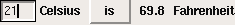
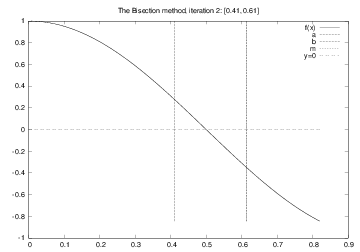
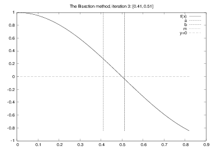

Solving \( \cos \pi x =0 \): iteration no. 1

$$ y = v_0t - 0.5gt^2 $$
v0 = 5
g = 9.81
t = 0.6
y = v0*t - 0.5*g*t**2
print y
Note:
Sample program:
C = 21; F = (9.0/5)*C + 32; print F
Idea: let the program ask the user a question "C=?", read the user's answer, assign that answer to the variable C.
C = raw_input('C=? ') # C becomes a string
C = float(C) # convert to float so we can compute
F = (9./5)*C + 32
print F
Running in a terminal window:
Terminal> python c2f_qa.py
C=? 21
69.8
n = int(raw_input('n=? '))
for i in range(2, 2*n+1, 2):
print i
# or:
print range(2, 2*n+1, 2)
# or:
for i in range(1, n+1):
print 2*i
Terminal> python myprog.py arg1 arg2 arg3 ...
Terminal> cp -r yourdir ../mydir
Terminal> ls -l
Unix programs (rm, ls, cp, ...) make heavy use of command-line arguments, (see e.g. man ls). We shall do the same.
C = 21; F = (9.0/5)*C + 32; print F
The user wants to specify C as a command-line argument
after the name of the program when we run the program:
Terminal> python c2f_cml.py 21
69.8
Command-line arguments are the "words" after the program name,
and they are stored in the list sys.argv:
import sys
C = float(sys.argv[1]) # read 1st command-line argument
F = 9.0*C/5 + 32
print F
Here is another program print_cml.py:
import sys; print sys.argv[1:]
Demonstrations:
Terminal> python print_cml.py 21 string with blanks 1.3
['21', 'string', 'with', 'blanks', '1.3']
Terminal> python print_cml.py 21 "string with blanks" 1.3
['21', 'string with blanks', '1.3']
Note 1: use quotes, as in "string with blanks", to override the rule
that command-line arguments are separate by blanks.
Note 2: all list elements are surrounded by quotes, demonstrating that command-line arguments are strings.
eval(s) evaluates a string object s as if the string had been
written directly into the program
>>> s = '1+2'
>>> r = eval(s)
>>> r
3
>>> type(r)
<type 'int'>
>>> r = eval('[1, 6, 7.5] + [1, 2]')
>>> r
[1, 6, 7.5, 1, 2]
>>> type(r)
<type 'list'>
We want r = 'math programming'. Writing just
r = eval('math programming')
is the same as writing
r = math programming
which is an invalid expression and illegal syntax.
Remedy: must put the string inside quotes:
s = "'math programming'"
r = eval(s) # r becomes 'math programming'
add_input.py) can do much...
i1 = eval(raw_input('Give input: '))
i2 = eval(raw_input('Give input: '))
r = i1 + i2
print '%s + %s becomes %s\nwith value %s' % \
(type(i1), type(i2), type(r), r)
We can add integer and float:
Terminal> python add_input.py
operand 1: 1
operand 2: 3.0
<type 'int'> + <type 'float'> becomes <type 'float'>
with value 4
or two lists:
Terminal> python add_input.py
operand 1: [1,2]
operand 2: [-1,0,1]
<type 'list'> + <type 'list'> becomes <type 'list'>
with value [1, 2, -1, 0, 1]
Terminal> python add_input.py
operand 1: (1,2)
operand 2: [3,4]
Traceback (most recent call last):
File "add_input.py", line 3, in <module>
r = i1 + i2
TypeError: can only concatenate tuple (not "list") to tuple
Terminal> python add_input.py
operand 1: one
Traceback (most recent call last):
File "add_input.py", line 1, in <module>
i1 = eval(raw_input('operand 1: '))
File "<string>", line 1, in <module>
NameError: name 'one' is not defined
Terminal> python add_input.py
operand 1: 4
operand 2: 'Hello, World!'
Traceback (most recent call last):
File "add_input.py", line 3, in <module>
r = i1 + i2
TypeError: unsupported operand type(s) for +: 'int' and 'str'
eval(s) evaluates an expression seval('r = 1+1') is illegal because this is a statement, not only an expressionexec to turn one or more complete statements into live code:
statement = 'r = 1+1' # store statement in a string
exec(statement)
print r # prints 2
For longer code we can use multi-line strings:
somecode = '''
def f(t):
term1 = exp(-a*t)*sin(w1*x)
term2 = 2*sin(w2*x)
return term1 + term2
'''
exec(somecode) # execute the string as Python code
Embed user's formula in a Python function:
formula = raw_input('Write a formula involving x: ')
code = """
def f(x):
return %s
""" % formula
from math import * # make sure we have sin, cos, log, etc
exec(code) # turn string formula into live function
# Ask the user for x values and evaluate f(x)
x = 0
while x is not None:
x = eval(raw_input('Give x (None to quit): '))
if x is not None:
y = f(x)
print 'f(%g)=%g' % (x, y)
While the program is running, the user types a formula, which becomes a function, the user gives x values until the answer is None, and the program evaluates the function f(x). Note: the programmer knows nothing about the user's choice of f(x) when she writes the program (!).
It is common for programs to read formulas and turn them into functions so we have made a special tool for this purpose:
>>> from scitools.std import StringFunction
>>> formula = 'exp(x)*sin(x)'
>>> f = StringFunction(formula)
>>> f(0)
0.0
>>> from math import pi
>>> f(pi)
2.8338239229952166e-15
>>> print str(f)
exp(x)*sin(x)
The function can also have parameters: \( g(t) = Ae^{-at}\sin (\omega x) \)
g = StringFunction('A*exp(-a*t)*sin(omega*x)',
independent_variable='t', A=1, a=0.1, omega=pi, x=5)
print g(1.2)
g.set_parameters(A=2, x=10)
print g(1.2)
Terminal> python diff.py 'exp(x)*sin(x)' 3.4 Numerical derivative: -36.6262969164
Differentiate \( e^x\sin x \) at \( x=3.4 \) numerically.
$$ f'(x)\approx \frac{f(x+h)-f(x-h)}{2h}\quad (h\mbox{ small}) $$
import sys from scitools.std import StringFunction f = StringFunction(sys.argv[1], independent_variable='x') x = float(sys.argv[2]) def numerical_derivative(f, x, h=1E-5): return (f(x+h) - f(x-h))/(2*h) print 'Numerical derivative:', numerical_derivative(f, x)
Terminal> python diff.py 'exp(x)*sin(x)' 3.4
Numerical derivative: -36.6262969164
Exact derivative: -36.6262969154476 (error=9.390E-10)
Formula for the derivative: exp(x)*sin(x) + exp(x)*cos(x)
Program extension:
import sympy as sym
x_value = x # store the value of x; x will be used as symbol
x = sym.symbols('x') # need x as symbol
formula = sym.sympify(str(f)) # turn f into sympy expression
# Differentiate formula wrt symbol x
dfdx = sym.diff(formula, x)
# Substitute symbol x by x_value
dfdx_value = dfdx.subs(x, x_value)
print 'Exact derivative:', dfdx_value, '(error=%.3E)' % \
(dfdx_value - numerical_derivative(f, x_value))
print 'Formula for the derivative:', dfdx
$$ s(t)=s_0 + v_0t + {1\over2}at^2$$
Input data: \( s_0 \) (initial location), \( v_0 \) (initial velocity), \( a \) (constant acceleration) and \( t \) (time)
Output data: \( s \) (current location)
Specify \( s_0=1 \) m, \( v_0=1 \) m/s, \( a=0.5 \) $\hbox{m/s}^2$, and \( t=3 \) s on the command line:
Terminal> python location_cml.py 1 1 0.5 3
6.25
Program:
import sys
s0 = float(sys.argv[1])
v0 = float(sys.argv[2])
a = float(sys.argv[3])
t = float(sys.argv[4])
s = s0 + v0*t + 0.5*a*t*t
print s
Many programs, especially on Unix systems, take a set of command-line arguments of the form --option value
Terminal> python location.py --v0 1 --t 3 --s0 1 --a 0.5
Terminal> python location.py --t 3
The latter run relies on default values for v0, s0, and a:
we provide only the values we want to change.
Such option-value pairs make it easier to understand what the input is (cf. keyword arguments).
import argparse
parser = argparse.ArgumentParser()
# Define command-line arguments
parser.add_argument('--v0', '--initial_velocity', type=float,
default=0.0, help='initial velocity')
parser.add_argument('--s0', '--initial_position', type=float,
default=0.0, help='initial position')
parser.add_argument('--a', '--acceleration', type=float,
default=1.0, help='acceleration')
parser.add_argument('--t', '--time', type=float,
default=1.0, help='time')
# Read the command line and interpret the arguments
args = parser.parse_args()
# Extract values
s = args.s0 + args.v0*t + 0.5*args.a*args.t**2
# or
s0 = args.s0; v0 = args.v0; a = args.a; t = args.t
s = s0 + v0*t + 0.5*a*t**2
Can use short or long options:
Terminal> python location.py --v0 1.2 --t 0.2
Terminal> python location.py --initial_velocity 1.2 --time 0.2

from Tkinter import *
root = Tk()
C_entry = Entry(root, width=4)
C_entry.pack(side='left')
Cunit_label = Label(root, text='Celsius')
Cunit_label.pack(side='left')
def compute():
C = float(C_entry.get())
F = (9./5)*C + 32
F_label.configure(text='%g' % F)
compute = Button(root, text=' is ', command=compute)
compute.pack(side='left', padx=4)
F_label = Label(root, width=4)
F_label.pack(side='left')
Funit_label = Label(root, text='Fahrenheit')
Funit_label.pack(side='left')
root.mainloop()
Scientific data are often available in files. We want to read the data into objects in a program to compute with the data.
21.8
18.1
19
23
26
17.8
One number on each line. How can we read these numbers?
Basic file reading:
infile = open('data.txt', 'r') # open file
for line in infile:
# do something with line
infile.close() # close file
Compute the mean values of the numbers in the file:
infile = open('data.txt', 'r') # open file
mean = 0
for line in infile:
number = float(line) # line is string
mean = mean + number
mean = mean/len(lines)
print mean
Read all lines at once into a list of strings (lines):
lines = infile.readlines()
for line in lines:
# process line
infile.close()
The modern with statement:
with open('data.txt', 'r') as infile:
for line in infile:
# process line
The old-fashioned while construction:
while True:
line = infile.readline()
if not line:
break
# process line
infile.close()
Reading the whole file into a string:
text = infile.read()
# process the string text
Line 1. Line 2. Line 3. Line 4.
>>> infile = open('tmp.txt', 'r')
>>> lines = infile.readlines() # read all lines
>>> lines
['Line 1.\n', 'Line 2.\n', 'Line 3.\n', 'Line 4.\n']
>>> infile.readline() # no more to read
''
>>> infile = open('tmp.txt', 'r')
>>> infile.readline() # read one line
'Line 1.\n'
>>> infile.readline() # read next line
'Line 2.\n'
>>> for line in infile: # read the next lines to the end
... print line
...
Line 3.
Line 4.
>>> infile = open('tmp.txt', 'r')
>>> filestr = infile.read()
>>> filestr
'Line 1.\nLine 2.\nLine 3.\nLine 4.\n'
>>> filestr.split() # split out all words
['Line', '1.', 'Line', '2.', 'Line', '3.', 'Line', '4.']
>>> line = 'Line 3.\n'
>>> line.split()
['Line', '3.']
>>> line.split('e')
['Lin', ' 3.\n']
Average rainfall (in mm) in Rome: 1188 months between 1782 and 1970
Jan 81.2
Feb 63.2
Mar 70.3
Apr 55.7
May 53.0
Jun 36.4
Jul 17.5
Aug 27.5
Sep 60.9
Oct 117.7
Nov 111.0
Dec 97.9
Year 792.9
How do we read such a file?
The key idea to process each line is to split the line into words:
months = []
values = []
for line in infile:
words = line.split() # split into words
if words[0] != 'Year':
months.append(words[0])
values.append(float(words[1]))
Can split with respect to any string s: line.split(s)
>>> line = 'Oct 117.7'
>>> words = line.split()
>>> words
['Oct', '117.7,']
>>> type(words[1]) # string, not a number!
<type 'str'>
def extract_data(filename):
infile = open(filename, 'r')
infile.readline() # skip the first line
months = []
rainfall = []
for line in infile:
words = line.split()
# words[0]: month, words[1]: rainfall
months.append(words[0])
rainfall.append(float(words[1]))
infile.close()
months = months[:-1] # Drop the "Year" entry
annual_avg = rainfall[-1] # Store the annual average
rainfall = rainfall[:-1] # Redefine to contain monthly data
return months, rainfall, annual_avg
months, values, avg = extract_data('rainfall.dat')
print 'The average rainfall for the months:'
for month, value in zip(months, values):
print month, value
print 'The average rainfall for the year:', avg
Basic pattern:
outfile = open(filename, 'w') # 'w' for writing
for data in somelist:
outfile.write(sometext + '\n')
outfile.close()
Can append text to a file with open(filename, 'a').
We have a nested list (rows and columns):
data = \
[[ 0.75, 0.29619813, -0.29619813, -0.75 ],
[ 0.29619813, 0.11697778, -0.11697778, -0.29619813],
[-0.29619813, -0.11697778, 0.11697778, 0.29619813],
[-0.75, -0.29619813, 0.29619813, 0.75 ]]
Write these data to file in tabular form
outfile = open('tmp_table.dat', 'w')
for row in data:
for column in row:
outfile.write('%14.8f' % column)
outfile.write('\n')
outfile.close()
0.75000000 0.29619813 -0.29619813 -0.75000000
0.29619813 0.11697778 -0.11697778 -0.29619813
-0.29619813 -0.11697778 0.11697778 0.29619813
-0.75000000 -0.29619813 0.29619813 0.75000000
read) or
reading line by line (readline, readlines, for line in fileobj)
import sys
C = float(sys.argv[1])
F = 5./9*C + 32
print F
How to handle wrong input from the user?
A user can easily use our program in a wrong way, e.g.,
Terminal> python c2f_cml.py
Traceback (most recent call last):
File "c2f_cml.py", line 2, in ?
C = float(sys.argv[1])
IndexError: list index out of range
sys.argv has then only one element, sys.argv[0],
which is the program name (c2f_cml.py)sys.argv[1], points to a non-existing element
in the sys.argv listIndexError
How can we take control, explain what was wrong with the input, and stop the program without strange Python error messages?
# Program c2f_cml_if.py
import sys
if len(sys.argv) < 2:
print 'You failed to provide a command-line arg.!'
sys.exit(1) # abort
F = 9.0*C/5 + 32
print '%gC is %.1fF' % (C, F)
Terminal> python c2f_cml_if.py
You failed to provide a command-line arg.!
try-except block
try:
<statements we intend to do>
except:
<statements for handling errors>
If something goes wrong in the try block, Python raises an exception and the execution jumps immediately to the except block.
Try to read C from the command-line, if it fails, tell the user,
and abort execution:
import sys
try:
C = float(sys.argv[1])
except:
print 'You failed to provide a command-line arg.!'
sys.exit(1) # abort
F = 9.0*C/5 + 32
print '%gC is %.1fF' % (C, F)
Execution:
Terminal> python c2f_cml_except1.py
You failed to provide a command-line arg.!
Terminal> python c2f_cml_except1.py 21C
You failed to provide a command-line arg.!
It is good programming style to test for specific exceptions:
try:
C = float(sys.argv[1])
except IndexError:
print 'You failed to provide a command-line arg.!'
If we have an index out of bounds in sys.argv,
an IndexError exception is raised, and we jump to the except block.
If any other exception arises, Python aborts the execution:
Terminal> python c2f_cml_tmp.py 21C
Traceback (most recent call last):
File "tmp.py", line 3, in <module>
C = float(sys.argv[1])
ValueError: invalid literal for float(): 21C
IndexError and ValueError exceptions
import sys
try:
C = float(sys.argv[1])
except IndexError:
print 'No command-line argument for C!'
sys.exit(1) # abort execution
except ValueError:
print 'C must be a pure number, not "%s"' % sys.argv[1]
sys.exit(1)
F = 9.0*C/5 + 32
print '%gC is %.1fF' % (C, F)
Executions:
Terminal> python c2f_cml_v3.py
No command-line argument for C!
Terminal> python c2f_cml_v3.py 21C
Celsius degrees must be a pure number, not "21C"
raise ExceptionType(message)
def read_C():
try:
C = float(sys.argv[1])
except IndexError:
# re-raise, but with specific explanation:
raise IndexError(
'Celsius degrees must be supplied on the command line')
except ValueError:
# re-raise, but with specific explanation:
raise ValueError(
'Degrees must be number, not "%s"' % sys.argv[1])
# C is read correctly as a number, but can have wrong value:
if C < -273.15:
raise ValueError('C=%g is a non-physical value!' % C)
return C
try:
C = read_C()
except (IndexError, ValueError) as e:
# print exception message and stop the program
print e
sys.exit(1)
Executions:
Terminal> c2f_cml.py
Celsius degrees must be supplied on the command line
Terminal> c2f_cml.py 21C
Celsius degrees must be a pure number, not "21C"
Terminal> c2f_cml.py -500
C=-500 is a non-physical value!
Terminal> c2f_cml.py 21
21C is 69.8F
We have frequently used modules like math and sys:
from math import log
r = log(6) # call log function in math module
import sys
x = eval(sys.argv[1]) # access list argv in sys module
Characteristics of modules:
Here are formulas for computing with interest rates:
$$
\begin{align}
A &= A_0\left( 1 + {p\over 360\cdot 100}\right)^{n},
\tag{1}\\
A_0 &= A\left( 1 + {p\over 360\cdot 100}\right)^{-n},
\tag{2}\\
n &= \frac{\ln {A\over A_0}}{\ln \left( 1 + {p\over 360\cdot 100}\right)} ,
\tag{3}\\
p &= 360\cdot 100 \left(\left({A\over A_0}\right)^{1/n} - 1\right)\tp
\tag{4}
\end{align}
$$
\( A_0 \): initial amount, \( p \): percentage, \( n \): days, \( A \): final amount
We want to make a module with these four functions.
from math import log as ln
def present_amount(A0, p, n):
return A0*(1 + p/(360.0*100))**n
def initial_amount(A, p, n):
return A*(1 + p/(360.0*100))**(-n)
def days(A0, A, p):
return ln(A/A0)/ln(1 + p/(360.0*100))
def annual_rate(A0, A, n):
return 360*100*((A/A0)**(1.0/n) - 1)
interest.pyinterest.py is actually a module interest (!)Example on use:
# How long time does it take to double an amount of money?
from interest import days
A0 = 1; A = 2; p = 5
n = days(A0, 2, p)
years = n/365.0
print 'Money has doubled after %.1f years' % years
if __name__ == '__main__': # this test defineds the test block
<block of statements>
In our case:
if __name__ == '__main__':
A = 2.2133983053266699
A0 = 2.0
p = 5
n = 730
print 'A=%g (%g) A0=%g (%.1f) n=%d (%d) p=%g (%.1f)' % \
(present_amount(A0, p, n), A,
initial_amount(A, p, n), A0,
days(A0, A, p), n,
annual_rate(A0, A, n), p)
Let's make a real test function for what we had in the test block:
def test_all_functions():
# Define compatible values
A = 2.2133983053266699; A0 = 2.0; p = 5; n = 730
# Given three of these, compute the remaining one
# and compare with the correct value (in parenthesis)
A_computed = present_amount(A0, p, n)
A0_computed = initial_amount(A, p, n)
n_computed = days(A0, A, p)
p_computed = annual_rate(A0, A, n)
def float_eq(a, b, tolerance=1E-12):
"""Return True if a == b within the tolerance."""
return abs(a - b) < tolerance
success = float_eq(A_computed, A) and \
float_eq(A0_computed, A0) and \
float_eq(p_computed, p) and \
float_eq(n_computed, n)
assert success # could add message here if desired
if __name__ == '__main__':
test_all_functions()
/Users/hpl/lib/python/mymods
Technique 1: add folder to PYTHONPATH in .bashrc:
export PYTHONPATH=$PYTHONPATH:/Users/hpl/lib/python/mymods
Technique 2: add folder to sys.path in the program:
sys.path.insert(0, '/Users/hpl/lib/python/mymods')
Technique 3: move the module file in a directory that Python already searches for libraries.
Question and answer input:
var = raw_input('Give value: ') # var is string!
# if var needs to be a number:
var = float(var)
# or in general:
var = eval(var)
Command-line input:
import sys
parameter1 = eval(sys.argv[1])
parameter3 = sys.argv[3] # string is ok
parameter2 = eval(sys.argv[2])
Recall: sys.argv[0] is the program name
--option value pairs with the aid of argparse:
import argparse
parser = argparse.ArgumentParser()
parser.add_argument('--p1', '--parameter_1', type=float,
default=0.0, help='1st parameter')
parser.add_argument('--p2', type=float,
default=0.0, help='2nd parameter')
args = parser.parse_args()
p1 = args.p1
p2 = args.p2
On the command line we can provide any or all of these options:
Terminal> program prog.py --parameter_1 2.1 --p2 -9
Evaluating string expressions with eval:
>>> x = 20
>>> r = eval('x + 1.1')
>>> r
21.1
>>> type(r)
<type 'float'>
Executing strings with Python code, using exec:
exec("""
def f(x):
return %s
""" % sys.argv[1])
Handling exceptions:
try:
<statements>
except ExceptionType1:
<provide a remedy for ExceptionType1 errors>
except ExceptionType2, ExceptionType3, ExceptionType4:
<provide a remedy for three other types of errors>
except:
<provide a remedy for any other errors>
...
Raising exceptions:
if z < 0:
raise ValueError(
'z=%s is negative - cannot do log(z)' % z)
infile = open(filename, 'r') # read
outfile = open(filename, 'w') # write
outfile = open(filename, 'a') # append
# Reading
line = infile.readline() # read the next line
filestr = infile.read() # read rest of file into string
lines = infile.readlines() # read rest of file into list
for line in infile: # read rest of file line by line
# Writing
outfile.write(s) # add \n if you need it
# Closing
infile.close()
outfile.close()
Nonlinear algebraic equations like
$$
\begin{align*}
x &= 1 + \sin x\\
\tan x + \cos x &= \sin 8x\\
x^5 - 3x^3 &= 10
\end{align*}
$$
are usually impossible to solve by pen and paper, but can be
solved by numerical methods. To this end, rewrite any equation as
$$ f(x) = 0 $$
For the above we have (put everything on the left-hand side)
$$
\begin{align*}
f(x) &= x - 1 - \sin x\\
f(x) &= \tan x + \cos x - \sin 8x\\\
f(x) &= x^5 - 3x^3 - 10
\end{align*}
$$
A solution \( x \) of \( f(x)=0 \) is called a root of \( f(x) \)



for i in range(0, n+1):
m = (a + b)/2
if f(a)*f(m) <= 0:
b = m # root is in left half
else:
a = m # root is in right half
# f(x) has a root in [a,b]
Idea: save \( f(x) \) evaluations in variables
f_a = f(a)
for i in range(0, n+1):
m = (a + b)/2
f_m = f(m)
if f_a*f_m <= 0:
b = m # root is in left half
else:
a = m # root is in right half
f_a = f_m
# f(x) has a root in [a,b]
while b-a <= epsilon:
f_a=f(a)
if f_a*f(b) > 0:
# error: f does not change sign in [a,b]
i = 0
while b-a > epsilon:
i = i + 1
m = (a + b)/2
f_m = f(m)
if f_a*f_m <= 0:
b = m # root is in left half
else:
a = m # root is in right half
f_a = f_m
# if x is the real root, |x-m| < epsilon
def f(x):
return 2*x - 3 # one root x=1.5
eps = 1E-5
a, b = 0, 10
fa = f(a)
if fa*f(b) > 0:
print 'f(x) does not change sign in [%g,%g].' % (a, b)
sys.exit(1)
i = 0 # iteration counter
while b-a > eps:
i += 1
m = (a + b)/2.0
fm = f(m)
if fa*fm <= 0:
b = m # root is in left half of [a,b]
else:
a = m # root is in right half of [a,b]
fa = fm
x = m # this is the approximate root
def bisection(f, a, b, eps):
fa = f(a)
if fa*f(b) > 0:
return None, 0
# Alternative: raise ValueError(
# 'No change of sign in [%g,%g]' % (a, b))
i = 0 # iteration counter
while b-a > eps:
i += 1
m = (a + b)/2.0
fm = f(m)
if fa*fm <= 0:
b = m # root is in left half of [a,b]
else:
a = m # root is in right half of [a,b]
fa = fm
return m, i
print bisection(f=lambda x: 2*x-3, a=0, b=10, eps=1E-5)
bisection function in a file bisection.py, we automatically have a module, and the bisection function can easily be imported in other programs to solve \( f(x)=0 \)
def test_bisection():
def f(x):
return 2*x - 3 # only one root x=1.5
eps = 1E-5
x, iter = bisection(f, a=0, b=10, eps=eps)
success = abs(x - 1.5) < eps # test within eps tolerance
assert success, 'found x=%g != 1.5' % x
if __name__ == '__main__':
test_bisection()
We want to provide an \( f(x) \) formula at the command line along with \( a \) and \( b \) (3 command-line args)
Usage:
Terminal> python bisection.py 'sin(pi*x**3)-x**2' -1 3.5
def get_input():
"""Get f, a, b, eps from the command line."""
from scitools.std import StringFunction
f = StringFunction(sys.argv[1])
a = float(sys.argv[2])
b = float(sys.argv[3])
eps = float(sys.argv[4])
return f, a, b, eps
# Usage:
f, a, b, eps = get_input()
x, iter = bisection(f, a, b, eps)
print 'Found root x=%g in %d iterations' % (x, iter)
def get_input():
"""Get f, a, b, eps from the command line."""
from scitools.std import StringFunction
try:
f = StringFunction(sys.argv[1])
a = float(sys.argv[2])
b = float(sys.argv[3])
eps = float(sys.argv[4])
except IndexError:
print 'Usage %s: f a b eps' % sys.argv[0]
sys.exit(1)
return f, a, b, eps
Two examples: \( \tanh x = x \) and \( \tanh x^5 = x^5 \):
Terminal> python bisection_plot.py "x-tanh(x)" -1 1
Terminal> python bisection_plot.py "x**5-tanh(x**5)" -1 1
The first equation is easy to treat, but the second leads to much less accurate results. Why??